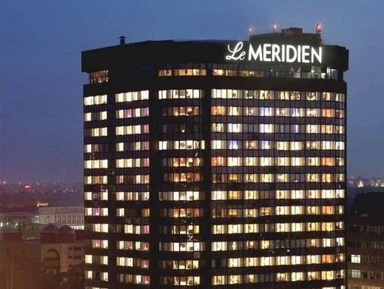

 Le Méridien is an upscale, design-focused international hotel brand with a European perspective, formerly headquartered in France and in the United Kingdom. The brand was acquired by US-based Starwood Hotels & Resorts in 2005. Following the acquisition of Starwood by Marriott in 2015, it is now owned by Marriott International and, as of December 31, 2018, has a portfolio of 107 hotels with 28,034 rooms. Le Méridien was established as a brand in 1972 by Air France under a joint venture agreement "to provide on a home away from home for its customers." The first Le Méridien property is a 1,000-room hotel in Paris — Le Méridien Etoile. Within two years of operation, the group had 10 hotels in Europe and Africa. Within the first six years, the number of hotels had risen to 21 hotels in Europe, Africa, the French West Indies, Canada, South America, the Middle East and Mauritius. By 1991, the total number of Le Méridien properties had risen to 58. On November 24, 2005, the Le Méridien brand and management fee business was acquired by Starwood Capital Group. The leased and owned real estate assets were acquired in a separate deal by a joint venture formed by Lehman Brothers and Starwood Capital.
India page